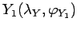
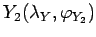
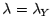
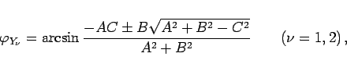
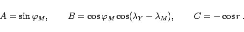
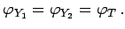

Inhalt Index DeskTop Bronstein

 Geometrie Sphärische Trigonometrie Berechnung sphärischer Dreiecke Kleinkreis
Geometrie Sphärische Trigonometrie Berechnung sphärischer Dreiecke Kleinkreis


Die Berechnung der geographischen Breiten der Schnittpunkte  und  des Kleinkreises mit dem Meridian  erfolgt gemäß (3.240a) mit den Gleichungen
|  | (3.245a) |
wobei gilt:
|  | (3.245b) |
Für A2+B2 > C2 gibt es im allgemeinen zwei verschiedene Lösungen, von denen jedoch eine entfällt, wenn ein Pol auf dem Kleinkreis liegt.
Gilt A2+B2 = C2 und liegt keiner der Pole auf dem Kleinkreis, dann berührt der Meridian den Kleinkreis in einem Tangierpunkt mit der geographischen Breite 